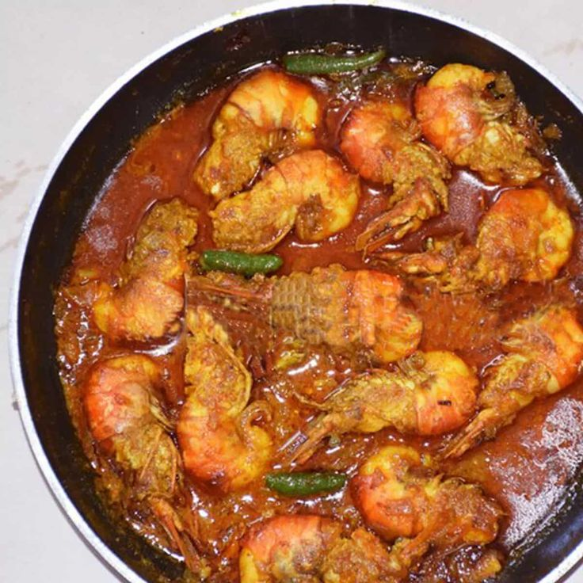

Chingri Macher Malai Curry

Description
Chingri Macher Malai Curry is a crown jewel of Bengali cuisine—a dish
that combines the subtle sweetness of coconut milk with the delicate
richness of prawns. “Malai” refers to the creamy texture of the gravy,
and “chingri” is the beloved prawn that stars in this recipe. Perfumed with whole spices like cardamom
and cinnamon, touched with the warmth of mustard oil, and balanced by a
hint of sweetness, this dish is both royal and comforting. Often reserved for special occasions and festive
meals, it pairs beautifully with fragrant white rice and a touch of
tradition.
Ingredients
- Large prawns or tiger shrimp - 500g (deveined, shell on or off as you prefer)
- Turmeric powder - 1 teaspoon
- Salt - ½ teaspoon
- Coconut milk - 1½ to 2 cups (fresh, canned, or from coconut milk powder)
- Onion paste - from 2 medium onions
- Ginger paste - 1 tablespoon
- Garlic paste - ½ tablespoon (optional)
- Green chilies - 4-5 (slit)
- Bay leaves - 2
- Cinnamon stick - 1 small piece
- Green cardamom - 2
- Cloves - 3-4
- Turmeric powder - ½ teaspoon
- Red chili powder - ½ teaspoon (optional, for color and mild heat)
- Sugar - 1 teaspoon
- Salt - to taste
- Mustard oil - 3-4 tablespoons (or substitute ghee for a milder version)
Steps
- Marinate the Prawns
- Wash and clean the prawns thoroughly.
- Marinate with turmeric and salt. Let it sit for 10-15 minutes.
- Fry the Prawns
- Heat mustard oil until it smokes slightly.
- Lightly fry the prawns on each side (30 seconds to 1 minute). Don't overcook. Set them aside.
- Start the Gravy
- In the same oil, add bay leaves, cardamom, cinnamon, and cloves. Sauté until fragrant.
- Add the onion paste and cook until golden and the raw smell disappears.
- Stir in ginger and garlic paste. Cook for 2-3 minutes.
- Add turmeric, red chili powder, sugar, and salt. Mix well and let the spices cook thoroughly.
- Add Coconut Milk
- Lower the flame and slowly pour in the coconut milk while stirring.
- Add slit green chilies and let the gravy come to a gentle simmer.
- Add the Prawns
- Carefully place the prawns into the gravy.
- Simmer uncovered for 5-7 minutes on low heat. The gravy should thicken slightly and coat the prawns well.
- Final Finish
- Drizzle a little ghee or raw mustard oil over the top for a flavor boost (optional).
- Let it rest for a few minutes before serving.
Best Served With
- Steamed basmati rice or fragrant gobindobhog rice
- Light cucumber salad or papad on the side
Back to Home Page